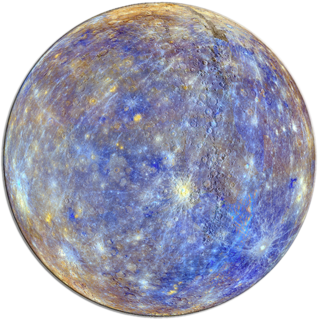

Planet Mercury
Mercury is intended a replacement for Sam Ruby's Planet Venus.
A planet is a kind of feed aggregator. It takes a list of newsfeeds (Atom, RSS, &c.), splices them together, and spits a set of HTML pages and/or a feed.
Quickstart
If you have the Go toolchain already configured, you can go install the binary:
go install github.com/kgaughan/mercury/cmd/@latest
By default, mercury will look for look for a file called mercury.toml in the current directory. This feed is in TOML format, but the key thing you need to know is that keys and values are separated with an =, string values must be quoted, and [[feed]] introduces new feed configuration.
If you want to use an explicitly named configuration file, you can pass this with the --config flag.
Here is an example file:
name = "My Planet!"
url = "https://example.com/"
owner = "Jane Doe"
email = "jane.doe@example.com"
cache = "./cache"
timeout = "20s"
theme = "./theme"
output = "./output"
items = 10
max_pages = 2
[[feed]]
name = "Keith Gaughan"
feed = "https://keith.gaughan.ie/feeds/all.xml"
[[feed]]
name = "Inklings"
feed = "https://talideon.com/inklings/feed"
See the configuration details for more details on the meaning of each field.
Then run:
mercury
This will fetch all the feeds to the cache directory and write the site to the output directory.
Command line
The --help flag will show you the help information:
$ ./mercury --help
mercury - Generates an aggregated site from a set of feeds.
Flags:
-c, --config string path to configuration (default "./mercury.toml")
-h, --help show help
-B, --no-build don't build anything
-F, --no-fetch don't fetch, just use what's in the cache
-V, --version print version and exit
Usually, the default behaviour is what you want: mercury will try to intelligently fetch any feeds and regenerate the site. Use --no-build if you just want to prime the cache but don't want to generate the site. Use --no-fetch if you want to regenerate the site without fetching any feeds. This can be useful if you're testing out a new theme.